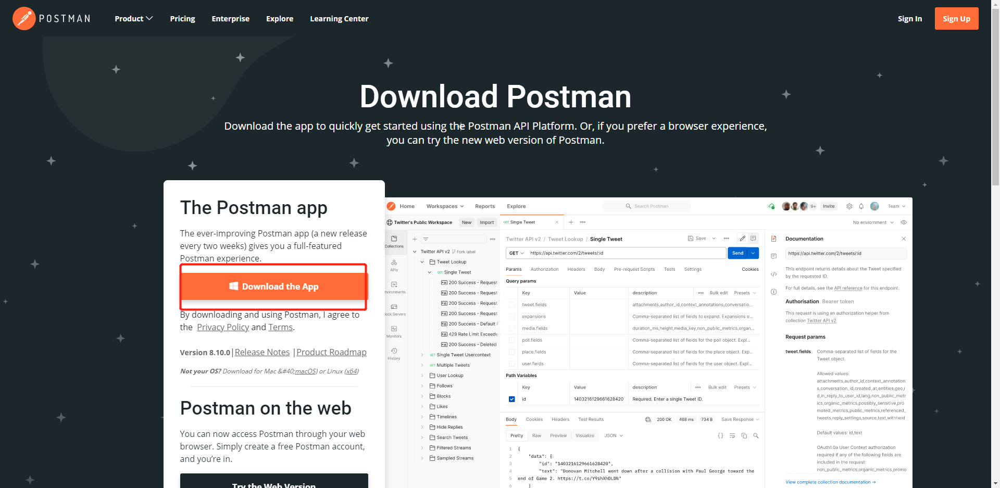
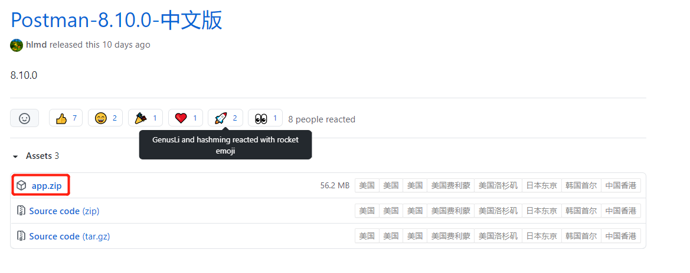
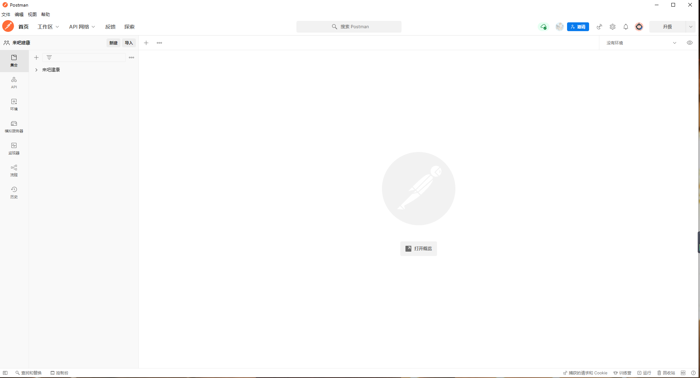
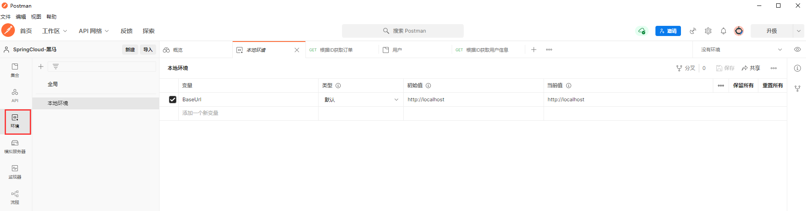
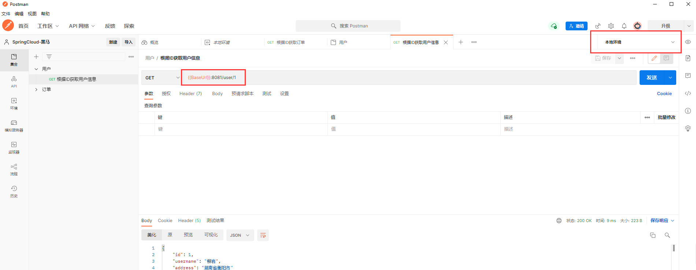

Postman
一、Postman 汉化教程
postman官网下载地址
https://www.postman.com/downloads/
postman汉化包
https://github.com/hlmd/Postman-cn/releases
1.首先从官网下载postMan安装包

2.下载postMan 汉化包(app.zip)

3.将汉化包解压并复制到Postman目录下
示例 C:\Users\WangJian\AppData\Local\Postman\app-9.14.0\resources
4.重启postMan 即可完成汉化

二、设置环境变量
1.有时需要在不同的环境下跑相同的测试，此时可以通过设置环境变量来动态选择。点击右上角的设置按钮：

2.使用这些键值的时候只需要加上两个花括号引用key，记得选取要测试的环境。

本博客所有文章除特别声明外，均采用 CC BY-NC-SA 4.0 许可协议。转载请注明来自 王楗！